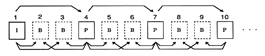
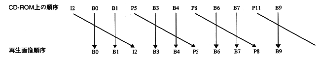

Table 2.2 Picture types
Picture type | Description |
|---|---|
I picture | An image that can be decoded only from its own information. Although compression efficiency is poor, random access is also possible if this image is inserted at regular intervals. |
P picture | Other pictures already decoded as predicted images < |
B picture | Predicted picture Images to use |

∙ In order to decode a B picture, the I picture or P picture that is the predicted picture must be decoded first. Therefore, the order in which pictures are input to the decoder and the actual display order are changed.
